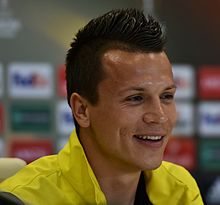
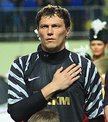
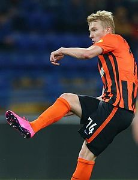
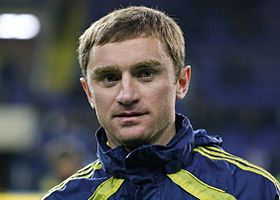

Євген Коноплянка
лівий півзахисник донецького «Шахтаря» та національної збірної України.
Народився 29 вересня 1989 в Кіровограді. Вихованець школи «Олімпік», грав у «Дніпрі», в 2019 перейшов у донецький «Шахтар». Брав участь в чемпіонаті Європи 2012 року та Євро-2016. Став українським футболістом року: 2010, 2012, 2013, найкращим гравцем чемпіонату України: 2013-14. Війшов до списку 100 найкращих футболістів року: 2015.

Андрій Пятов
Воротар донецького «Шахтаря» та капітан національної збірної України
Народився 28 червня 1984 в Кіровограді. З 2001 грав у полтавській «Ворсклі». У «Шахтарі» з 2006. Разом з «Шахтарем» переміг у Кубку УЄФА. Увійшов до складу національної збірної України на Чемпіонаті світу 2006, 2010 роках та Євро-2012 і Євро-2016. Став найкращим воротарем України: 2009, 2010 та найкращим воротарем світу у 2011(33 місце).

Віктор Коваленко
Атакувальний півзахисник донецького «Шахтаря» та збірної України.
Народився 14 лютого 1996 у Херсоні. В команді «гірників» з 2014. В 2016 році став наймолодшим капітаном в історії клубу у віці 20 років і 87 днів. Грав у складі збірної України на Чемпіонаті Європи 2016. В 2016 став півфіналістом Єврокубку Ліги Європи. Став найкращим бомбардиром (володар «Золотого бутса») молодіжного чемпіонату світу 2015.

Андрій Воробей
Бомбардир донецького «Шахтаря» та гравець національної збірної України.
Народився 29 листопада 1978 в Донецьку. За «Шахтар» грав з 1997 по 2007. Став чемпіоном України 2002, 2005 та 2006, срібним призером чемпіонатів України 1999, 2000 та 2001, володарем Кубка України 2001 і 2002 та Суперкубка України 2005. В сезоні 2000/01 став найкращим бомбардиром чемпіонату України (21 гол) та кубку України (6 голів).